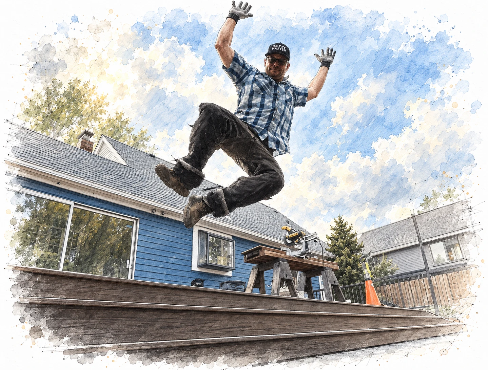
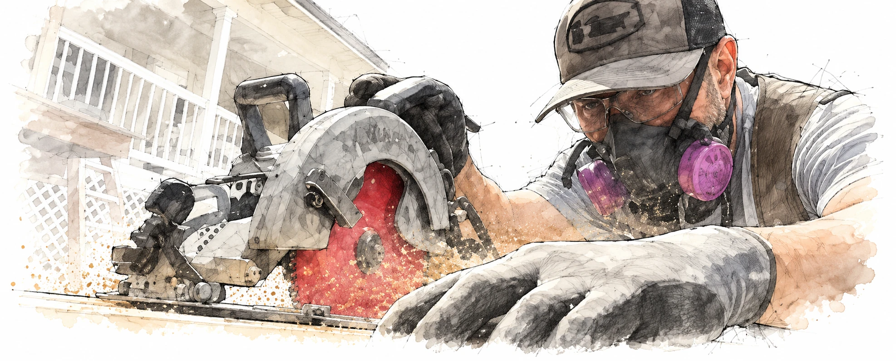
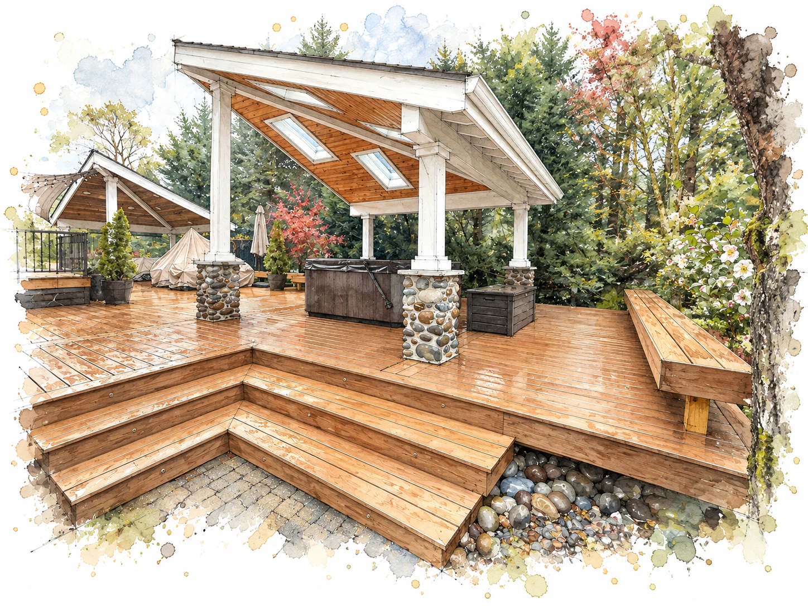
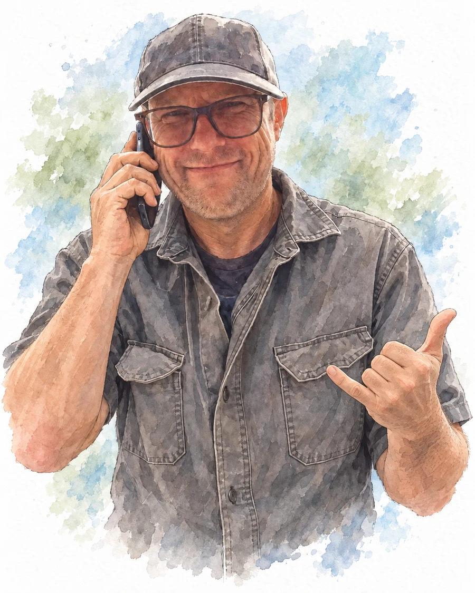
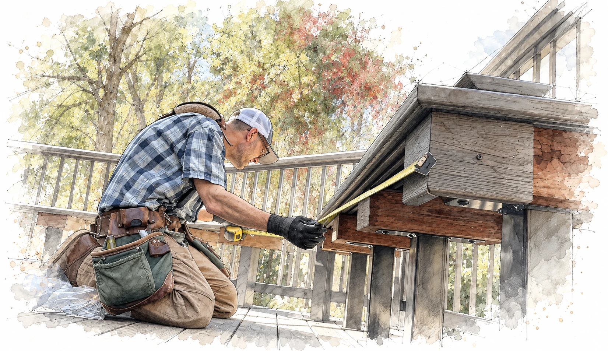
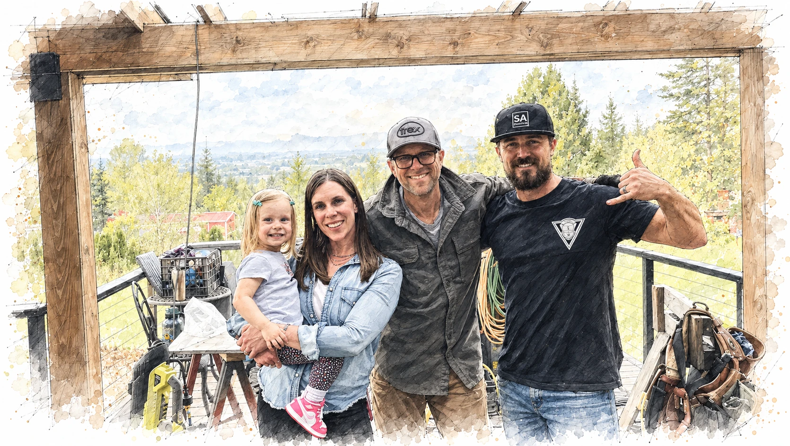
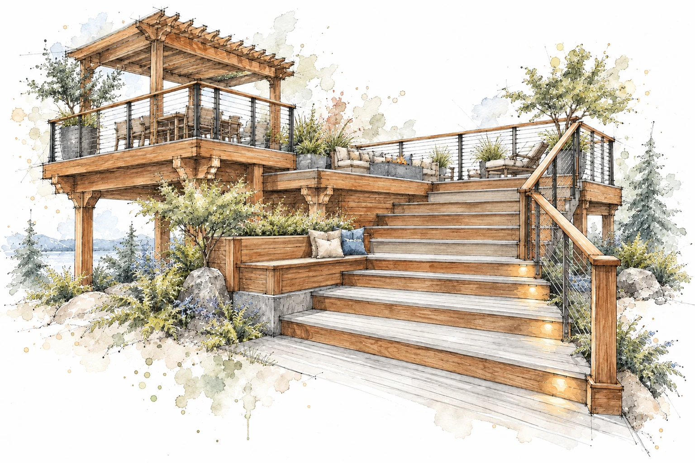

INDEPENDENT CRAFTSMAN / PORTLAND METRO
An eye for detail.
A whole lot
of soul.
I’m The Deck Master. Eighteen years building decks, a lifetime in construction, and still finding joy in getting the details just right.
Get a feel for the work
One builder. His own high standards.
Good music usually playing.
Family always at the heart of it.

A CRAFT, THROUGH AND THROUGH
There’s a lot of care
in a deck that
feels effortless.
The way a border meets a stair. The rhythm of the boards. The details you notice up close, and the ones that make the whole space feel right.
I work solo because I want my hands, my eye, and my standards in every part of the build. It’s personal work. I take it personally.
ROOM TO IMAGINE
A place with
a point of view.
Your ideas deserve a craftsman who’s as invested in them as you are. I love finding the details that make a deck feel like it belongs to you.

KIND WORDS
The people.
Their experience.
Good work starts with a good connection.
His eye for detail is exceptional, and working through the design details together has felt like a true collaboration. We’ve been so impressed by his work ethic and how efficiently he works on the job site, especially as a solo craftsman. He brings real care to the little things, and the pride he takes in his work shows.
A CLOSER LOOK
The work.
Up close.
Finished spaces, thoughtful details, and the craft that brings it all together. Tap a photo to take a closer look.
5 of 20 photos

OUT ON THE JOB
The decks.
The details.
The real thing.
Finished spaces and the work that gets them there. A collection of films from my builds over the years.

THE PERSON BEHIND THE WORK
Good music.
Good company.
A good day’s work.
I’m a family man, a music lover, and a craftsman who gets a lot of satisfaction from making something well.
Classic rock, classical, jazz—the soundtrack wanders. And yes, I’ve been known to do a little jig over a perfect miter. Loving the work is part of doing it well.
I want the build to feel like a collaboration. You bring your hopes for the space; I bring the experience, the eye for detail, and the care to help make them real.

MORE KIND WORDS
Erik truly earned the title of "Deck Master."
From start to finish, Erik was exceptionally professional, hard-working, and supremely skilled at his craft. His attention to detail is fantastic, and he makes the entire process feel like a true collaboration. Beyond his technical expertise, he brings a genuine, kind, and incredibly warm personality to the job site.
One of the highlights of the project was how wonderful he was with my young boys—he was so patient with them, letting them feel included and even teaching them a bit along the way. Erik is just a fun guy to be around, and we couldn't be happier with the final product.
If you have a deck project in mind, do not hesitate: hire Erik now! You won't regret it.

FOR THE LIFE YOU LIVE OUTSIDE
Make room for
the good stuff.
The family gathering. The quiet morning. The conversation that runs a little long. That’s what the deck is for.
Explore the project films